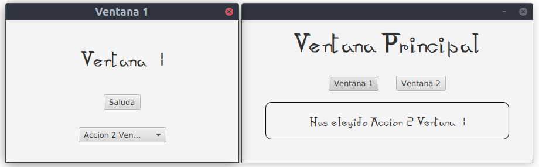

Comunicación entre ventanas
Si queremos comunicar ventanas o, mejor dicho, escenas, debemos tener un mecanismo para poder tener un flujo de información entre controladores. La forma que hemos visto en el ejemplo anterior no nos vale para este menester ya que en el fichero .fxml, o en el SceneBuilder, indicamos cuál es el controlador y en el proceso de carga se crea dicho controlador y nosotros no tenemos acceso al mismo. Lo hacíamos con el siguiente código:
Parent raiz = FXMLLoader.load(LocalizadorRecursos.class.getResource("vistas/Ejemplo.fxml"));Sin embargo, podemos obtener el mismo efecto creando una clase cargadora para el fichero .fxml, cargando y obteniendo su controlador y así podremos tener acceso a dicho controlador.
FXMLLoader cargadorEjemplo = new FXMLLoader(LocalizadorRecursos.class.getResource("vistas/Ejemplo.fxml"));
Parent raiz = cargadorEjemplo.load();
cEjemplo = cargadorEjemplo.getController();Ahora, ya podemos tener acceso al controlador y en el mismo podemos crear métodos y propiedades para realizar dicho flujo de información.
Por ejemplo, en los ejemplos con todo el código he creado un paquete denominado javafx.comunicacionventanas. En él he creado un ejemplo que consta de una ventana principal desde la que puedo lanzar otras dos ventanas idénticas (Ventana1 y Ventana2) mediante dos botones en esta ventana principal. La ventana principal también tiene una etiqueta que nos informa de las acciones realizadas en cada una de las ventas (pulsar el botón de saludo o elegir una opción de una caja de elección).

El código de los controladores es el que se muestra a continuación, aunque como he dicho, lo tenéis en el código con todos los ejemplos. Para que se puedan comunicar lo que he hecho es que he pasado la etiqueta de la ventana principal a la ventana 1 y 2 para que puedan cambiar su texto.
ControladorVentanaPrincipal.java
package javafx.comunicacionventanas.controladores;
import java.io.IOException;
import javafx.fxml.FXML;
import javafx.fxml.FXMLLoader;
import javafx.recursos.LocalizadorRecursos;
import javafx.scene.Scene;
import javafx.scene.control.Button;
import javafx.scene.control.Label;
import javafx.scene.layout.VBox;
import javafx.stage.Modality;
import javafx.stage.Stage;
public class ControladorVentanaPrincipal {
@FXML private Button btVentana1;
@FXML private Button btVentana2;
@FXML private Label lbMensajes;
private Stage escenarioVentana1;
private Stage escenarioVentana2;
private void crearVentana1() throws IOException {
if (escenarioVentana1 == null) {
escenarioVentana1 = new Stage();
FXMLLoader cargadorVentana1 = new FXMLLoader(LocalizadorRecursos.class.getResource("vistas/Ventana1.fxml"));
VBox raizVentana1 = cargadorVentana1.load();
ControladorVentana1 controladorVentana1 = cargadorVentana1.getController();
controladorVentana1.setLBMensajes(lbMensajes);
Scene ventana1 = new Scene(raizVentana1);
escenarioVentana1.setTitle("Ventana 1");
escenarioVentana1.initModality(Modality.APPLICATION_MODAL);
escenarioVentana1.setScene(ventana1);
}
}
private void crearVentana2() throws IOException {
if (escenarioVentana2 == null) {
escenarioVentana2 = new Stage();
FXMLLoader cargadorVentana2 = new FXMLLoader(LocalizadorRecursos.class.getResource("vistas/Ventana2.fxml"));
VBox raizVentana2 = cargadorVentana2.load();
ControladorVentana2 controladorVentana2 = cargadorVentana2.getController();
controladorVentana2.setLBMensajes(lbMensajes);
Scene ventana2 = new Scene(raizVentana2);
escenarioVentana2.setTitle("Ventana 2");
escenarioVentana2.initModality(Modality.APPLICATION_MODAL);
escenarioVentana2.setScene(ventana2);
}
}
@FXML
private void abrirVentana1() throws IOException {
crearVentana1();
escenarioVentana1.showAndWait();
}
@FXML
private void abrirVentana2() throws IOException {
crearVentana2();
escenarioVentana2.showAndWait();
}
}ControladorVentana1.java
package javafx.comunicacionventanas.controladores;
import javafx.collections.FXCollections;
import javafx.fxml.FXML;
import javafx.scene.control.Button;
import javafx.scene.control.ComboBox;
import javafx.scene.control.Label;
public class ControladorVentana1 {
@FXML private Button btSaluda;
@FXML private ComboBox<String> cbAcciones;
private Label lbMensajes;
public void setLBMensajes(Label lbMensajes) {
this.lbMensajes = lbMensajes;
}
@FXML
private void initialize() {
cbAcciones.setItems(FXCollections.observableArrayList("Accion 1 Ventana 1", "Accion 2 Ventana 1"));
}
@FXML
private void saluda() {
lbMensajes.setText("Hola desde la ventana 1");
}
@FXML
private void muestraEleccion() {
lbMensajes.setText("Has elegido " + cbAcciones.getSelectionModel().getSelectedItem());
}
}ControladorVentana2.java
package javafx.comunicacionventanas.controladores;
import javafx.collections.FXCollections;
import javafx.fxml.FXML;
import javafx.scene.control.Button;
import javafx.scene.control.ComboBox;
import javafx.scene.control.Label;
public class ControladorVentana2 {
@FXML private Button btSaluda;
@FXML private ComboBox<String> cbAcciones;
private Label lbMensajes;
public void setLBMensajes(Label lbMensajes) {
this.lbMensajes = lbMensajes;
}
@FXML
private void initialize() {
cbAcciones.setItems(FXCollections.observableArrayList("Accion 1 Ventana 2", "Accion 2 Ventana 2"));
}
@FXML
private void saluda() {
lbMensajes.setText("Hola desde la ventana 2");
}
@FXML
private void muestraEleccion() {
lbMensajes.setText("Has elegido " + cbAcciones.getSelectionModel().getSelectedItem());
}
}